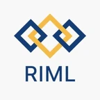

Research Assistant
RIML Lab, Sharif University of Technology · Supervisor: Prof. M. H. Rohban
- Designed GhostWord, a time-localized acoustic backdoor attack on ASR that reaches over 90% attack success on Whisper and Wav2Vec2.
- Developed TransferBlock, which uses Latent Jacobian Regularization to stop attacks on base ASR models from transferring to fine-tuned versions.